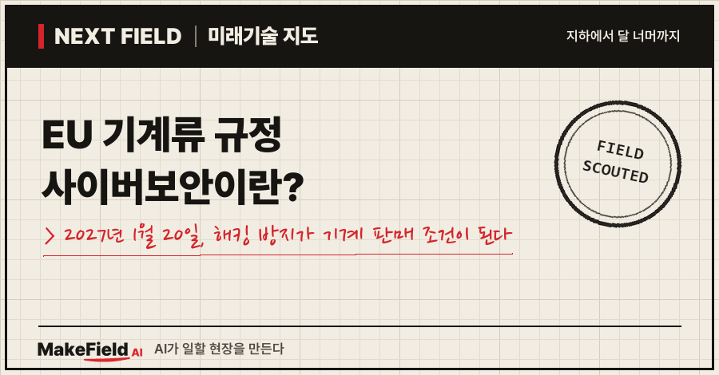
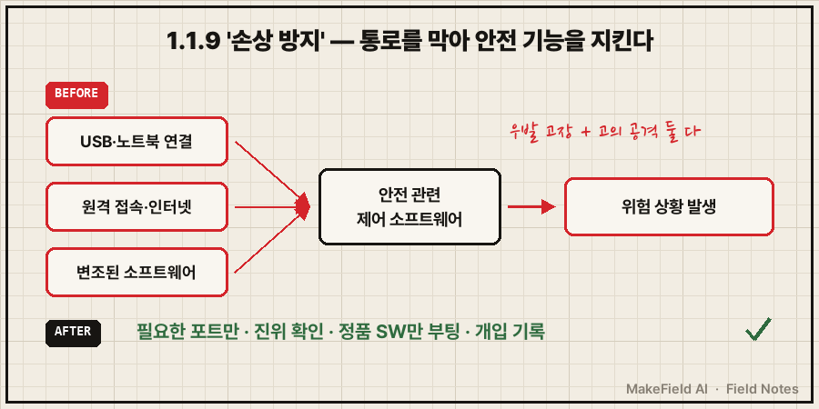
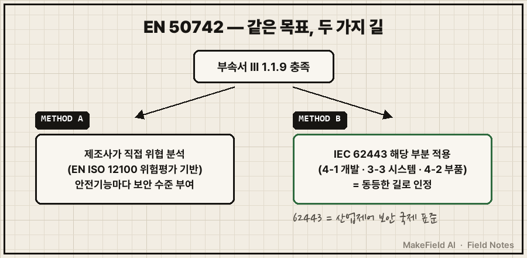
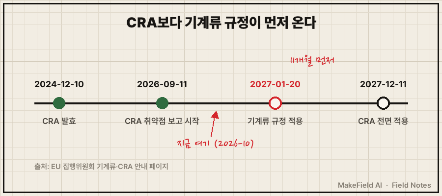

한 줄 요약: EU 기계류 규정(규정 2023/1230)은 2027년 1월 20일부터 의무 적용되며, 기계의 안전 기능이 우발적 고장뿐 아니라 고의적 사이버 공격으로도 망가지지 않도록 막으라는 요건(부속서 III 1.1.9 '손상 방지')을 새로 넣었습니다(EU 집행위원회, 경향신문 2026). 별도 유예기간 없이 전면 시행된다는 점이 핵심이에요.
EU에 기계를 수출하는 제조사라면 2027년 1월 20일 이후 내놓는 기계부터 이 규정을 지켜야 합니다. 2026년 10월 기준으로 남은 시간은 약 3개월 남짓이에요. 이 규정이 무엇을 요구하는지, 그리고 이 마감 앞에서 누가 무엇을 팔고 있는지 쉽게 풀어볼게요.
1. EU 기계류 규정이란 무엇인가요
EU 기계류 규정이란 EU에서 팔리는 모든 기계의 안전 규칙을, 나라별로 옮겨 적용하던 '지침'에서 EU 전역에 그대로 적용되는 '규정'으로 바꾼 법이다. 기존 기계류 지침(2006/42/EC)을 대신해요.
💡 지침 vs 규정 — '지침'은 EU가 큰 방향을 주면 각 나라가 자기 법으로 옮겨 적는 방식, '규정'은 EU 전역에 문장 그대로 바로 적용되는 법. 번역본 여러 개 대신 원본 하나를 쓰는 셈이다.
EU 집행위원회 안내에 따르면 이 규정은 2027년 1월 20일부터 의무 적용되고, 그 전에 시장에 나온 기계는 기존 지침을 따르면 됩니다(EU 집행위원회, 2026). 경향신문(2026-07-31)은 이 규정이 "별도의 유예기간 없이 전면 시행"되며 "사이버보안과 인공지능(AI), 디지털 기술 문서화 관련 요건을 포함한다"고 전했어요.
| 구분 | 기존 기계류 지침 | 새 기계류 규정 |
|---|---|---|
| 법 형식 | 지침(나라별 국내법으로 옮김) | 규정(EU 전역 직접 적용) |
| 적용 시점 | 2027-01-19 이전 출시 기계 | 2027-01-20 이후 출시 기계 |
| 새로 들어간 것 | — | 사이버보안(손상 방지), AI 기반 안전 기능, 디지털 설명서·적합성 선언 |
(출처: EU 집행위원회 기계류 안내 페이지, 경향신문 2026-07-31)
2. 사이버보안 조항 '1.1.9 손상 방지'는 무슨 뜻인가요
1.1.9 '손상 방지'란 다른 기기나 원격 접속을 통해 기계의 안전 관련 소프트웨어·데이터가 우발적이든 고의적이든 망가져 위험한 상황이 생기지 않도록 설계하라는 요건이다. 기계 안전이 처음으로 '해킹'까지 범위에 넣은 거예요.
💡 손상(corruption) — 여기서는 '부패'가 아니라 소프트웨어·데이터가 고장이나 공격으로 바뀌거나 망가지는 것을 뜻한다.
💡 안전 관련 제어시스템 — 비상정지·인터록처럼 사람이 다치지 않게 기계를 멈추거나 막는 제어 부분.
해설 자료를 종합하면 요구 내용은 세 갈래입니다(Certifico 2024, IBF Solutions 2026).
- 다른 장비나 인터넷 같은 원격 기기를 연결해도 위험한 상황이 생기지 않아야 한다.
- 안전에 중요한 소프트웨어로 신호·데이터를 주고받는 하드웨어 부품은 우발적·고의적 손상으로부터 보호돼야 한다.
- 소프트웨어에 대한 정당한 개입과 부당한 개입의 증거를 기록해야 한다.

그림 속 내용을 글로 옮기면 이렇습니다. 공격 통로는 USB·노트북 같은 직접 연결, 원격 접속·인터넷, 변조된 소프트웨어 세 가지이고, 이 통로가 안전 관련 제어 소프트웨어에 닿으면 위험 상황으로 이어질 수 있어요. 대책은 통로를 줄이고(필요한 포트만), 들어오는 명령의 진위를 확인하고, 정품 소프트웨어만 돌게 하고, 개입을 기록하는 것입니다.
3. 그럼 무엇을 하면 되나요 — 정답지 'EN 50742'
EN 50742는 1.1.9를 어떻게 지키면 되는지 구체화하는 유럽 표준으로, 2026년 10월 기준 최종안(FprEN 50742:2026)이 CENELEC 최종 승인 단계에 있다(IBF Solutions, 2026-10). 투표가 통과되면 정식 EN 50742로 발행돼요.
💡 EN 50742 — 기계의 '사이버 손상 방지'를 어떻게 하면 되는지 정리한 유럽 표준. 시험 범위를 알려주는 정답지 같은 문서.
💡 CENELEC — 유럽 전기기술 표준화 위원회. 전기·전자 분야 유럽 표준을 만드는 곳.
이 표준은 두 가지 길을 열어 둡니다.

- 방법 A: 제조사가 기계 위험평가 방식(EN ISO 12100)을 바탕으로 직접 위협을 분석하고, 안전 기능마다 보안 수준을 정해요.
- 방법 B: 산업제어 보안 국제 표준 IEC 62443의 해당 부분(4-1 개발 절차, 3-3 시스템 요건, 4-2 부품 요건)을 일관되게 적용하면 동등한 길로 인정합니다(IBF Solutions, 2026-10).
💡 IEC 62443 — 공장 제어시스템을 해킹에서 지키는 국제 표준 묶음. 개발 절차·시스템·부품별로 나뉘어 있다.
어느 길이든 요구되는 기술 대책은 비슷해요(IBF Solutions, 2026-10).
| 대책 | 쉬운 말 | 구체 내용 |
|---|---|---|
| 하드닝·접근 통제 | 안 쓰는 문 잠그기 | 필요한 포트·서비스만 켜고, 안전 관련 설정값은 강한 인증으로 보호 |
| 통신 무결성 | 보낸 사람·내용 확인 | 제어 명령이 허가된 곳에서 왔는지, 중간에 바뀌지 않았는지 확인. 이상 시 안전 상태로 전환 |
| 소프트웨어 무결성 | 정품만 돌리기 | Secure Boot로 제조사 서명 소프트웨어만 실행, 기능안전을 해치지 않는 업데이트 절차 |
| 로깅 | 블랙박스 | 정당·부당한 개입을 읽을 수 있는 디지털 기록으로 남김. 어려우면 봉인 같은 물리적 증거 |
💡 하드닝(강화) — 안 쓰는 문·창문을 잠그듯, 쓰지 않는 통신 포트·기능을 꺼서 공격 통로를 줄이는 작업.
💡 Secure Boot — 전원을 켤 때 위조되지 않은 정품 소프트웨어만 돌게 하는 장치.
4. 왜 지금인가요 — CRA보다 11개월 먼저 오는 마감
EU에 기계를 파는 제조사에게는 사이버복원력법(CRA, 2027-12-11 전면 적용)보다 기계류 규정(2027-01-20)이 약 11개월 먼저 온다. CRA 자체의 등급·의무는 이전 Next Field 글 'EU 사이버복원력법(CRA)이란?'에서 다뤘어요.
💡 CRA(사이버복원력법) — 소프트웨어가 든 제품을 EU에서 팔려면 보안 요건을 지키라는 EU 법. 기계류 규정과 별개의 법이다.

EU 집행위원회에 따르면 CRA는 2024년 12월 10일 발효됐고, 보고 의무는 2026년 9월 11일, 주요 의무는 2027년 12월 11일부터 적용돼요. 기계류 규정은 그 사이인 2027년 1월 20일에 끼어 있습니다. 즉 기계 제조사는 두 규제를 연달아 맞게 되고, 첫 마감은 기계류 규정 쪽이에요.
5. 돈의 흐름 — 누가 사고, 누가 파나요
사는 쪽은 EU에 기계를 수출하는 제조사, 파는 쪽은 인증기관·보안 회사·안전자동화 기업이며, 이들은 '진단·컨설팅·시험·교육'을 묶어 팔고 있다. 다만 이 분야만 따로 집계한 시장 규모 통계는 공개 자료에서 확인되지 않았어요.
| 파는 쪽(예시) | 무엇을 파나 | 근거 |
|---|---|---|
| 시험·인증기관 | 기계류 규정·CRA 대응 교육(웨비나), 시험·심사·인증 | TÜV SÜD 코리아 웨비나 2026-10-22 |
| 보안 회사 + 인증기관 조합 | 운영기술(OT) 보안 진단·컨설팅 + 시험·인증 | SK쉴더스–티유브이슈드코리아 협약(바이라인네트워크 2026-03-26) |
| 안전자동화 기업 | 기계류 규정 대응 제품·컨설팅·교육 연계 서비스 | 필츠코리아(경향신문 2026-07-31) |
💡 운영기술(OT) — 사무실 IT가 아니라 공장 설비·기계를 직접 움직이는 제어 기술.
사는 쪽의 사정은 어떨까요. 기계류 규정만 다룬 조사는 찾지 못했지만, 같은 시기 EU 제품 보안 규제(CRA)에 대한 중소기업 설문이 힌트를 줍니다. EU 사이버보안청(ENISA)이 2026년 2~3월 31개국 194개 조직을 조사한 결과, 142곳(약 73%)이 규제 대응에 재정 지원이 필요하다고 답했고, 70% 이상이 기술문서·보안 개발용 실무 템플릿을 원했어요(클라우드보안연합 연구노트, 2026-07).
💡 ENISA — EU 사이버보안청. EU의 사이버보안 전담 기관.
이 숫자가 보여 주는 시장의 모양은 '건당 큰돈을 받는 맞춤 컨설팅'보다 템플릿·교육·진단처럼 싸고 많이 팔리는 형태에 가깝다는 해석이 가능합니다(추정 — CRA 설문을 기계류 규정에 빗댄 해석). 이 절의 기업명은 산업 구조를 설명하기 위한 예시이며, 특정 기업에 대한 투자 판단과는 무관해요.
6. 한계와 반대 근거 — 넘어야 할 산
- 정답지가 아직 확정 전: EN 50742는 2026년 10월 기준 최종 승인 단계예요(IBF Solutions). 투표 결과와 EU 관보 인용 시점은 확인되지 않았습니다. 정답지가 늦으면 제조사가 지출을 미룰 수 있어요.
- 돈이 없는 수요: 위 설문에서 4곳 중 3곳이 재정 지원이 필요하다고 했어요. 수요는 넓어도 지불 의사는 얕을 수 있습니다.
- 두 지식의 공백: 1.1.9 대책(포트 차단, Secure Boot, 접근 권한, 로그)은 보안 문서와 기계 제어 설정이 같은 장비 안에서 만나야 풀려요. 보안 전문가와 제어 엔지니어 사이 빈칸이 실제 병목이 될 수 있습니다(추정).
자주 묻는 질문(FAQ)
Q. 2027년 1월 20일 전에 이미 판 기계도 다시 맞춰야 하나요?
A. EU 집행위원회 안내에 따르면 2027년 1월 20일 이전에 시장에 나온 기계는 기존 기계류 지침(2006/42/EC)을 따르면 됩니다. 새 규정은 그 이후 출시분에 적용돼요.
Q. 기계류 규정과 CRA는 같은 법인가요?
A. 아닙니다. 기계류 규정은 기계 안전(사람 보호) 규칙이고, CRA는 디지털 제품 보안 규칙이에요. 적용일도 2027-01-20과 2027-12-11로 다릅니다.
Q. IEC 62443을 이미 적용했다면 도움이 되나요?
A. EN 50742 최종안은 IEC 62443 해당 부분(4-1, 3-3, 4-2)을 일관되게 적용하면 동등한 길로 인정한다고 해설돼 있어요(IBF Solutions, 2026-10). 다만 최종 표준 발행 전이므로 확정 문구는 발행본으로 확인해야 합니다.
오늘의 용어 정리
- EU 기계류 규정(2023/1230) — EU 기계 안전 규칙. 2027-01-20 의무 적용.
- 지침 vs 규정 — 나라별로 옮겨 적는 법 / EU 전역에 바로 적용되는 법.
- 1.1.9 손상 방지 — 안전 관련 SW·데이터가 고장·공격으로 망가지지 않게 하라는 요건.
- 안전 관련 제어시스템 — 비상정지·인터록 등 사람 보호용 제어.
- EN 50742 — 1.1.9 대응 방법을 정한 유럽 표준(최종 승인 단계).
- CENELEC — 유럽 전기기술 표준화 위원회.
- IEC 62443 — 산업제어시스템 보안 국제 표준.
- 하드닝 — 안 쓰는 포트·기능을 꺼 공격 통로를 줄이는 작업.
- Secure Boot — 정품 소프트웨어만 부팅되게 하는 장치.
- CRA — EU 사이버복원력법(2027-12-11 전면 적용).
- OT(운영기술) — 설비·기계를 직접 움직이는 제어 기술.
- ENISA — EU 사이버보안청.
기계가 '튼튼한가'만 묻던 시대에서 '뚫리지 않는가'까지 묻는 시대로 넘어가는 중이에요. 다음 Next Field에서는 또 다른 '다음 현장'을 가 볼게요. 여러분 주변의 기계·설비는 원격 접속이나 USB 연결을 어떻게 관리하고 있나요?
출처
[1] EU 집행위원회 기계류 안내 페이지(2026) — 기계류 규정 2027-01-20 의무 적용, 이전 출시 기계는 기존 지침 적용, 사이버 안전·AI 안전 기능·디지털 설명서 조항
→ https://single-market-economy.ec.europa.eu/sectors/mechanical-engineering/machinery_en
[2] 경향신문(2026-07-31) — 유예기간 없는 전면 시행, 사이버보안·AI·디지털 문서 요건, 필츠코리아의 제품·컨설팅·교육 연계 서비스
→ https://www.khan.co.kr/article/202607311054018
[3] IBF Solutions(2026-10) — FprEN 50742:2026 최종 승인 단계, 방법 A·B와 IEC 62443 동등 인정, 하드닝·통신 무결성·Secure Boot·로깅 대책
→ https://www.ibf-solutions.com/en/seminars-and-news/news/new-standard-pren-50742-protection-against-corruption
[4] Certifico(2024-03) — 부속서 III 1.1.9 손상 방지 조문, prEN 50742가 다루는 범위(1.1.9 및 1.2.1 관련 요건)
→ https://www.certifico.com/normazione/news-normazione/pren-50742-safety-of-machinery-protection-against-corruption
[5] EU 집행위원회 CRA 안내 페이지(2026) — CRA 발효 2024-12-10, 보고 의무 2026-09-11, 주요 의무 2027-12-11
→ https://digital-strategy.ec.europa.eu/en/policies/cyber-resilience-act
[6] 바이라인네트워크(2026-03-26) — SK쉴더스(OT 보안 진단·컨설팅)와 티유브이슈드코리아(시험·심사·인증) 협약
→ https://byline.network/2026/03/26-580/
[7] TÜV SÜD 코리아 웨비나 페이지(2026) — 2026-10-22 'EU 기계류 사이버보안 및 CRA 대응 전략' 웨비나, 기계 수출 제조사 대상
→ https://www.tuvsud.com/ko-kr/resource-centre/webinar/kr_preparing-for-eu-machinery-cybersecurity-and-cra
[8] 클라우드보안연합 연구노트(2026-07) — ENISA 설문 194개 조직, 재정 지원 필요 142곳(약 73%), 템플릿 요구 70% 이상
→ https://labs.cloudsecurityalliance.org/research/csa-research-note-enisa-cra-sme-maturity-20260715-csa-styled/